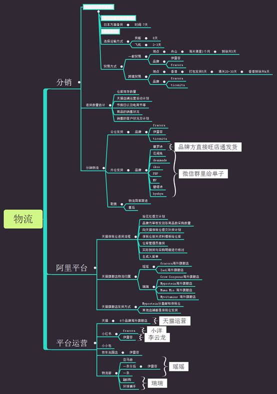

一、入职准备
1、人力中心向合格者发送邮件《录用通知书》，并抄送综合部经理、副总经理、总经理; 2、确认新员工报到日期,通知新员工在报到之前来公司明确报到需注意事项:所需资料、以及其他须知;
3、通知人事助理新员工报到日期，人事行政准备好新员工入职手续办理所需表单并负责依据入职内容落实各项工作:
1）综合部门负责安排办公位，申领电脑;
2）综合人事行政负责发放办公用品;
3）综合人事行政开通邮箱、帐号、调试电脑设备等。
二、入职报到
1、入职当天，人事行政要求填写新员工《员工入职登记表》，并按要求办理入职手续:
并交验各种证件:
一寸免冠照片2张;
身份证复印件二张、户口复印件一张;
学历、学位证书原件(学生提供学生证原件)复印件一张;
资历或资格证件原件复印件一张;
与原单位解除或终止劳动合同的证明;
1）与员工签订劳动合同、保密协议;
2）钉钉建立和完善员工档案、考勤（钉钉考勤加入工作组、智能前台考勤）;
3）介绍公司情况，引领新员工参观公司、介绍同事;
4）将新员工移交给用人部门;
5）在公司社保网站上对员工进行增员设置；
6）公司微信群里发布加盟信息更新员工花名册。
2、用人部门负责的工作
1）负责安置座位，介绍并帮助熟悉工作环境;
2）部门制定专人作为新员工辅导员，介绍本岗位职责和工作流程 。
三、入职培训（入职一周后进行）
1、组织新员工培训。
2、人事行政部门组织相应公司介绍和职能专业技术培训
3、不定期举行由公司管理层进行的企业发展历程、企业文化、各部门职能与关系等方面的培训。
四、转正评估
1、转正是对员工的一次工作评估的机会，也是公司优化人员的一个重要组成部分。公司试用期2-3个月，期间新员工每日对自己本职工作对部门进行工作汇报；人事行政部门每周对部门新员工的表现进行反馈，要求部门主管每周对新员工的工作表现进行工作评估；
2、新员工一般试用期为二个月，由人事行政部安排进行转正评估，人事部门会在转正提前15天通知员工准备转正资料，提前一周通知员工、用人部门主管、综合部经理、副总（销售部门通知总经理）进行转正面谈的时间；
3、转正面谈的结果将由综合部经理通知人事行政部门，转正面谈结束后直接将结果告之新员工，即后进行转正手续（或离职手续）；
4、更新员工花名册，将转正员工的信息进行更改，并提交财务组审核；
五、入职结束
新员工根据要求，待各项工作落实后，于试用期结束时，将此表签字后，归档。
六、离职手续
1、离职员工填写《离职申请单》，写明离职理由，并将工作进行交接；交部门负责人、人事行政部门、财务部门、副总经理、总经理签字提交；
2、归还在职期间所有的办公设备、办公用品，个人物品除外；
3、离职要求，转正员工需提前一个月提交离职申请单，试用期员工需提前三天提交离职申请单；
4、人事行政部门根据《离职申请单》，开具离职证明；
5、更新员工花名册，将员工信息进行更改，并提交财务组审核；
6、在公司社保网站上对离职员工的社保进行减员设置；
7、将离职人员的信息归入员工档